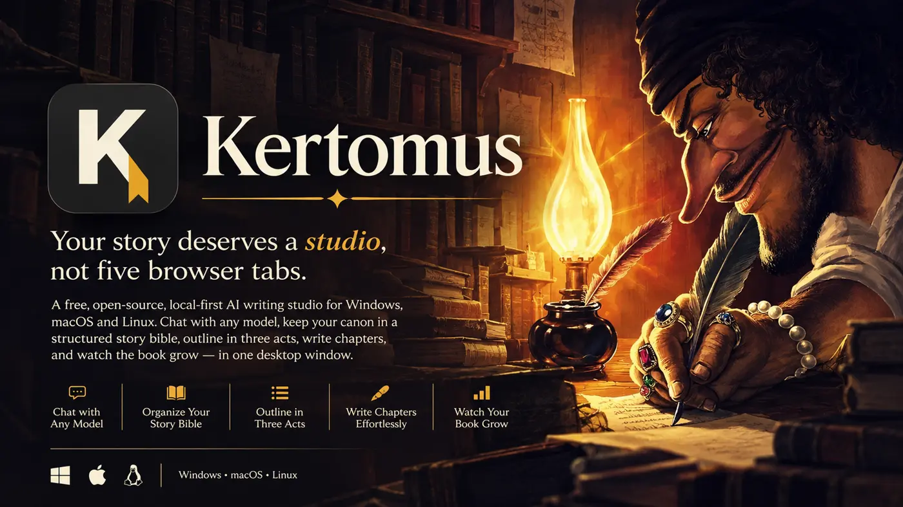

01 / CHATPikir
Berpikir keras
Balasan streaming, jejak penalaran, @-mention, file, dan pustaka prompt. Model bisa membaca canon-mu, bukan menebak-nebak.
Dulu OpenPlot AI · Dulu Inkwell
Kertomus adalah studio penulisan AI local-first yang gratis dan open-source. Ngobrol dengan model apa pun, simpan canon di story bible yang sungguhan, susun tiga babak, dan tulis bab — dalam satu jendela desktop, di mesinmu sendiri.

Ruangan-ruangannya
Kebanyakan alat menulis memberimu kotak chat lalu berharap yang terbaik. Kertomus memberi model ceritamu yang sebenarnya — dan memberimu ruang untuk membentuknya.
Balasan streaming, jejak penalaran, @-mention, file, dan pustaka prompt. Model bisa membaca canon-mu, bukan menebak-nebak.
Mode Agent membaca Story Bible, mencari entri, menulis bab, dan menyimpan memori — setiap tulisan terlihat.
Papan naskah, versi bab, sprint, papan adegan, dan alur tiga babak. Bukunya, bukan folder draf.
Meja tulis
Kertomus bukan jendela chat dengan penghitung kata yang ditempel belakangan. Naskah adalah pusat ruangan: bab dalam urutan baca, versi yang bisa dibuka lagi, dan timer sprint yang menghitung kata tanpa mengunci pintu.
Canon, bukan perasaan
Dunia, lokasi, karakter, item, dan lore adalah catatan sungguhan — diberi tag, saling terhubung, dan bisa dicari — bukan paragraf yang terus kamu tempel ke prompt. Agent membaca bible yang sama denganmu.
Angka yang sangat serius
Tanpa grafik pertumbuhan. Tanpa deck investor. Hanya angka yang mungkin benar-benar dipedulikan penulis, plus satu angka yang secara kontrak tidak boleh kami jelaskan.
Juga benar: tanpa langganan, tanpa akun, tanpa spinner “menyinkronkan…”. Kata-katamu tetap di tempat kamu menaruhnya.
Bawa pulang
Gratis dan open source. Pasang installer atau buka folder portabel. Bawa API key sendiri, atau arahkan Kertomus ke Ollama dan biarkan semuanya tetap offline.
Rilis saat ini v1.3.1 · Windows, macOS & Linux
Artefak Linux ditandatangani GPG oleh workflow rilis. Cara memverifikasi unduhan.
Setiap rilis juga menyertakan salinan portabel, changelog, dan manifes SHA-256. Lihat semua rilis ↗
Panduan
Panduan sungguhan, bukan daftar fitur dengan tangkapan layar. Mulai dari bab pertama, atau lompat ke bagian yang sedang bermasalah.
Provider, chat, canon, bab, alur, statistik, skill, MCP, privasi, dan semua pintasan. Ditulis untuk manusia yang punya naskah.
Buka panduan ↗ English · HandbookVersi Inggris dengan istilah yang sama, untuk saat kamu butuh detail yang lebih panjang.
Open the handbook ↗ Extend · Plugin APILifecycle hook, perintah palette, dan gerbang persetujuan yang mencegah kode asing berjalan sendiri.
Baca API ↗Pertanyaan wajar
Hanya teks yang kamu pilih untuk dikirim ke penyedia model. Library-mu — chat, canon, bab, versi, pengaturan — tinggal di file SQLite lokal. Tidak ada akun Kertomus dan tidak ada telemetri. Jika kamu memakai model hosted, kebijakan penyedianya berlaku untuk teks yang kamu kirim; jika memakai Ollama atau LM Studio, tidak ada yang keluar dari mesin.
Kamu perlu model, bukan akun di kami. Bawa key OpenAI-compatible, Anthropic, OpenRouter, Groq, atau arahkan ke server lokal. Ollama dan LM Studio tidak perlu key. Satu kartu provider per layanan; model berbeda untuk setiap chat.
Ya. Build AppImage dan tarball x64 serta arm64, dengan .zsync untuk AppImageUpdate. Artefak rilis ditandatangani GPG dan disertai SHA256SUMS-linux-x64 (atau -arm64) plus tanda tangan terpisah.
Rak ketujuh bukan fitur. Dia tidak ada di navigasi. Dia sebuah cerita pendek, dan dia ada tepat di tempat yang dia inginkan. Studio ini tidak akan menerima pertanyaan saat ini.
Lampu itu menahan atap. Tolong jangan dipindah. Sisa aplikasinya adalah software biasa: React, Electron, SQLite, database local-first, dan rasa curiga yang sehat terhadap sinkronisasi cloud.